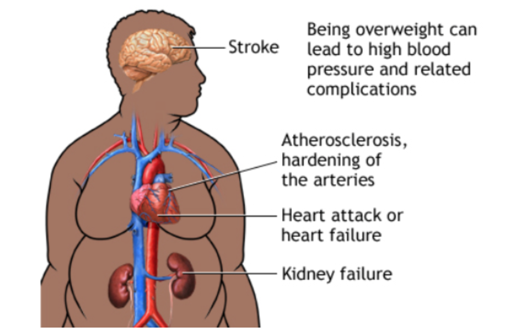

Atherosclerosis
Atherosclerosis is a disease that affects developed arteries. A waxy substance called plaque, which contains lipids, fats, cholesterol, and calcium, builds up in the arteries (which carry oxygen rich blood, to your body).As a result, this reduces the blood flow in your heart as the plaque congests the arteries, and this can lead to blood clotting (accumulation of blood clots can partially or completely prevent blood flow).
A normal artery is flexible, however the buildup of plaque reduces its flexibility and narrows its diameter. This can lead to serious heart problems, such as heart attacks and stroke, and even death.
Atherosclerosis has been known to cause Coronary Heart Disease, Carotid Artery Disease, Peripheral Artery Disease, and Chronic Kidney Disease, which are other conditions that cause the heart to malfunction